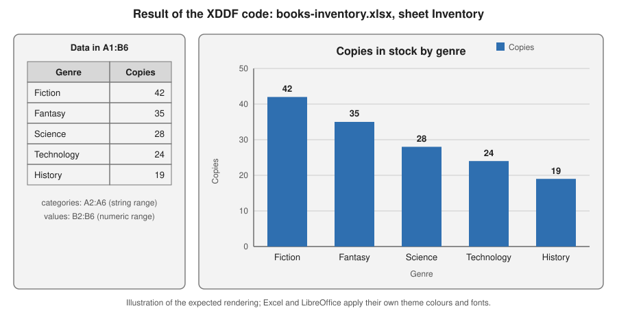

Images, Charts, Comments & Hyperlinks
|
This content was generated with the assistance of AI and should be verified against the official documentation before being relied on in production. |
Baseline date: 2026-10-09. This page was written against Apache POI 5.5.1 (the latest release on that date; the 6.0 line
is announced but has not been released), Java 21 and later, Spring Boot 4.x on Spring Framework 7 and Jakarta EE 11. It
covers everything in a worksheet that is not a cell value: pictures, charts, comments, hyperlinks and embedded objects.
Pictures, charts, comments and embedded objects live in a separate layer of the file, the drawing, and all go through
the same entry point, the drawing patriarch. Hyperlinks are plain sheet features. The example workbook is
books-inventory.xlsx of the Bookshelf scenario described in the
section landing page: a logo picture, a comment on an ISBN cell, hyperlinks to the
publisher, and a column chart of the copies in stock per genre. The cell styles used for the link text are explained in
Cell Styles, Fonts & Formats, and the workbook and sheet
model in Spreadsheet Usermodel Basics. Reopening an existing
file and keeping its drawings intact is the subject of
Templates & Modifying Workbooks.
There is no narrative guide for charts. The Apache POI website documents pictures, comments and hyperlinks in the
Spreadsheet Quick Guide, but it has no XDDF chart guide: the
chart classes are described only by their Javadoc and by the programs in the poi-examples module. Every chart snippet on
this page is therefore derived from BarChart, LineChart and ScatterChart in
org.apache.poi.examples.xssf.usermodel and from the org.apache.poi.xddf.usermodel.chart Javadoc, adapted to the
Bookshelf data, and has been compiled and run against POI 5.5.1.
The drawing layer
A worksheet stores cell data in one part of the package and everything graphical in another. In an .xlsx file the sheet
part (xl/worksheets/sheet1.xml) holds rows and cells, and a <drawing> element in it points to a drawing part
(xl/drawings/drawing1.xml). That part lists the pictures, charts, shapes and embedded objects of the sheet, each with an
anchor that says where it sits. Each kind of object adds parts of its own:
| Object | OOXML parts (.xlsx) |
Binary equivalent (.xls) |
|---|---|---|
Picture |
|
Escher records in the |
Chart |
|
BIFF chart records. POI reads some of them; creation is limited to a very basic bar chart ( |
Comment |
|
|
Hyperlink |
A |
|
Embedded object |
|
|
The consequence for the API is two groups of operations. Hyperlinks need no drawing. Pictures, charts, comments and
embedded objects are shapes and are created through a Drawing that you obtain from the sheet. The file-format
background is in File Formats: OOXML & OLE2.
The drawing patriarch
Sheet.createDrawingPatriarch() returns the top-level drawing object of the sheet. The name comes from the Escher
structure of the binary format, where one container is the parent of all shapes of a sheet. Its type is Drawing<?> in
the common ss.usermodel interface and XSSFDrawing (or HSSFPatriarch) in the concrete classes. The shape factories
hang from it:
| Method | Creates |
|---|---|
|
A picture shape from an index returned by |
|
A comment box; attach it with |
|
A chart. |
|
An |
|
An embedded OLE object (low level and format-specific; see Embedded objects) |
Creating the patriarch can remove existing shapes. The Javadoc of Sheet.createDrawingPatriarch says that it "will
normally have the effect of removing any existing drawings on this sheet". This matters when you reopen a workbook that
already contains pictures or charts and add one more. The safe habit, valid for both formats, is to ask first and create
only when nothing exists:
Drawing<?> drawing = sheet.getDrawingPatriarch();
if (drawing == null) {
drawing = sheet.createDrawingPatriarch();
}In a check made for this page, XSSFSheet.createDrawingPatriarch() on a loaded .xlsx that already contained a picture
returned the existing drawing with its shape intact. Write the guard anyway: it documents the intent and keeps the code
correct for the .xls implementation and for other versions.
Only one patriarch exists per sheet. Create it once per sheet, outside any row loop, and pass it to the helper methods.
Pictures
Adding a picture
Adding an image takes two steps. First the bytes are registered with the workbook, which stores them once in the package and returns an index. Then a picture shape that points to the index is placed on a sheet through an anchor:
int pictureIndex = workbook.addPicture(bytes, Workbook.PICTURE_TYPE_PNG); // 1: store the bytes once
ClientAnchor anchor = factory.createClientAnchor(); // 2: where to put it
anchor.setCol1(6);
anchor.setRow1(0);
Picture picture = drawing.createPicture(anchor, pictureIndex);
picture.resize(); // natural sizeThe same index can be used for many shapes on many sheets: a logo on every sheet is one stored image and several shapes,
not several copies of the bytes. XSSFWorkbook also has an addPicture(InputStream, int) overload; the byte[] form is
the one in the common Workbook interface.
Constant on Workbook |
Format |
|---|---|
|
PNG. The right default for logos and screenshots |
|
JPEG. Photographs |
|
Device-independent bitmap (BMP) |
|
Enhanced Metafile (vector, Windows) |
|
Windows Metafile (vector, Windows) |
|
Macintosh PICT |
Prefer PNG or JPEG: they are shown identically by Excel, LibreOffice and web viewers. Vector formats are Windows-centred.
Anchors, cell coordinates and EMU
A ClientAnchor describes a rectangle on the sheet by its two corners. Each corner is a cell (zero-based column and row)
plus an offset inside the cell. Offsets are in EMU (English Metric Units): 914,400 EMU per inch, 12,700 per point and
9,525 per pixel at 96 dpi. Conversions are in org.apache.poi.util.Units.
| Setter or constant | Meaning |
|---|---|
|
Top-left corner cell |
|
Bottom-right corner cell. |
|
Offsets of the corners inside their cells, in EMU. In |
|
Conversion constants |
|
How the shape behaves when users move, insert or resize cells |
The anchor type decides what happens when the layout beneath the shape changes:
AnchorType |
Behaviour |
|---|---|
|
The shape moves and stretches with the cells it covers (the Excel default for charts) |
|
The shape moves with its top-left cell but keeps its size (the Excel default for pictures) |
|
Position is fixed, size follows the cells |
|
Position and size are fixed |
Resizing a picture
Picture.resize() sets the second corner so that the picture has its natural size starting at the first corner;
resize(double scale) multiplies that size by a factor and resize(scaleX, scaleY) scales each axis separately. The
computation converts pixels to cells using the column widths and row heights at the time of the call, and the official
guide notes that it is accurate only when the default row heights and the default font are used. To fit an image in a fixed
box, set both corners yourself and skip resize(); the image is then stretched to the box, so compute the aspect ratio
yourself when it matters.
Call resize() after the widths of the covered columns and the heights of the covered rows are final. A later
setColumnWidth, autoSizeColumn or setHeightInPoints leaves the picture with a stale second corner.
Comments and hyperlinks
Cell comments
A comment (Excel calls it a note in recent versions) is a box shown when the pointer rests on a cell. It is created from the patriarch and an anchor that places the box, then attached to the cell:
| Method | Effect |
|---|---|
|
Creates the comment shape; the anchor is the position of the pop-up box, not of the cell |
|
The text; use |
|
Author shown in the status bar |
|
|
|
Attaches the comment; passing |
|
Reading, one cell or the whole sheet as a map |
Practical rules: one comment per cell; a comment text is limited to 32,767 characters by the Excel limits; set an explicit anchor size for long texts because the default box is small; and comments cost extra parts (the comments part and a VML drawing), so avoid thousands of them in generated reports. Threaded comments (the modern conversation-style comments of Microsoft 365) are a different structure from these notes; POI creates the notes described here.
Hyperlinks
CreationHelper.createHyperlink(HyperlinkType) creates the link; setAddress sets the target; Cell.setHyperlink
attaches it. Hyperlinks are the only item on this page that does not need the drawing patriarch.
HyperlinkType |
Target and example address |
|---|---|
|
A web address, |
|
A |
|
A path to another file, absolute or relative to the workbook |
|
A place inside the workbook: a sheet and a cell, written |
|
No link (used when reading) |
Hyperlink.setLabel sets the text of the link and setFirstRow/setLastRow (and column variants) make it span a range
for the file formats that store ranges. A hyperlink does not change how the cell looks: Excel shows the standard
blue underlined style only when a cell style says so, so apply a font with setUnderline(Font.U_SINGLE) and a blue
colour, from a style that you create once and share. Addresses are not validated; a malformed URL is written as is. When
the address comes from user input, check the scheme before writing it (allow https, http and mailto), because a
workbook is often opened by a person who trusts it.
The complete example
The class below decorates the Inventory sheet with a logo, a comment on the ISBN cell and the three common kinds of
hyperlinks. It works on any Workbook; replace XSSFWorkbook by HSSFWorkbook for a binary file.
package bookshelf;
import java.io.FileOutputStream;
import java.io.IOException;
import java.nio.file.Files;
import java.nio.file.Path;
import org.apache.poi.common.usermodel.HyperlinkType;
import org.apache.poi.ss.usermodel.Cell;
import org.apache.poi.ss.usermodel.CellStyle;
import org.apache.poi.ss.usermodel.ClientAnchor;
import org.apache.poi.ss.usermodel.Comment;
import org.apache.poi.ss.usermodel.CreationHelper;
import org.apache.poi.ss.usermodel.Drawing;
import org.apache.poi.ss.usermodel.Font;
import org.apache.poi.ss.usermodel.Hyperlink;
import org.apache.poi.ss.usermodel.IndexedColors;
import org.apache.poi.ss.usermodel.Picture;
import org.apache.poi.ss.usermodel.Row;
import org.apache.poi.ss.usermodel.Sheet;
import org.apache.poi.ss.usermodel.Workbook;
import org.apache.poi.xssf.usermodel.XSSFWorkbook;
public final class InventoryDecorations {
public static void main(String[] args) throws IOException {
byte[] logo = Files.readAllBytes(Path.of("bookshelf-logo.png"));
try (Workbook workbook = new XSSFWorkbook()) {
CreationHelper factory = workbook.getCreationHelper();
Sheet sheet = workbook.createSheet("Inventory");
Drawing<?> drawing = sheet.createDrawingPatriarch();
// One shared style for every link cell.
Font linkFont = workbook.createFont();
linkFont.setUnderline(Font.U_SINGLE);
linkFont.setColor(IndexedColors.BLUE.getIndex());
CellStyle linkStyle = workbook.createCellStyle();
linkStyle.setFont(linkFont);
// Logo at G1, natural size scaled to half.
int pictureIndex = workbook.addPicture(logo, Workbook.PICTURE_TYPE_PNG);
ClientAnchor logoAnchor = factory.createClientAnchor();
logoAnchor.setCol1(6);
logoAnchor.setRow1(0);
Picture logoPicture = drawing.createPicture(logoAnchor, pictureIndex);
logoPicture.resize(0.5);
Row row = sheet.createRow(1);
// Comment on A2.
Cell isbn = row.createCell(0);
isbn.setCellValue("978-0-306-40615-7");
ClientAnchor box = factory.createClientAnchor();
box.setCol1(isbn.getColumnIndex() + 1);
box.setCol2(isbn.getColumnIndex() + 4);
box.setRow1(row.getRowNum());
box.setRow2(row.getRowNum() + 3);
Comment comment = drawing.createCellComment(box);
comment.setString(factory.createRichTextString("ISBN checked against the national catalogue."));
comment.setAuthor("catalogue-service");
comment.setVisible(false);
isbn.setCellComment(comment);
// External web link.
Cell site = row.createCell(1);
site.setCellValue("Publisher site");
Hyperlink url = factory.createHyperlink(HyperlinkType.URL);
url.setAddress("https://example.org/publisher");
site.setHyperlink(url);
site.setCellStyle(linkStyle);
// Link inside the workbook.
Cell back = row.createCell(2);
back.setCellValue("Go to top");
Hyperlink doc = factory.createHyperlink(HyperlinkType.DOCUMENT);
doc.setAddress("'Inventory'!A1");
back.setHyperlink(doc);
back.setCellStyle(linkStyle);
// Mail link.
Cell mail = row.createCell(3);
mail.setCellValue("Ask the librarian");
Hyperlink email = factory.createHyperlink(HyperlinkType.EMAIL);
email.setAddress("mailto:librarian@example.org?subject=Inventory");
mail.setHyperlink(email);
mail.setCellStyle(linkStyle);
try (FileOutputStream out = new FileOutputStream("decorations.xlsx")) {
workbook.write(out);
}
}
}
}Source: the Images, Cell comments and Hyperlinks sections of the
Spreadsheet Quick Guide, and the Javadoc of
Drawing,
Picture and
Hyperlink.
Reading drawings back
Reading is the reverse path, and is useful for tests and for import pipelines that must reject workbooks with unexpected
content (see the section landing page for the import pages that come later). The
XSSF classes expose the shapes of the patriarch, the stored pictures and per-cell comments and links:
package bookshelf;
import java.io.File;
import java.io.IOException;
import org.apache.poi.openxml4j.exceptions.InvalidFormatException;
import org.apache.poi.ss.usermodel.Cell;
import org.apache.poi.ss.usermodel.Row;
import org.apache.poi.xssf.usermodel.XSSFChart;
import org.apache.poi.xssf.usermodel.XSSFDrawing;
import org.apache.poi.xssf.usermodel.XSSFPicture;
import org.apache.poi.xssf.usermodel.XSSFPictureData;
import org.apache.poi.xssf.usermodel.XSSFShape;
import org.apache.poi.xssf.usermodel.XSSFSheet;
import org.apache.poi.xssf.usermodel.XSSFWorkbook;
public final class InventoryInspector {
public static void main(String[] args) throws IOException, InvalidFormatException {
try (XSSFWorkbook workbook = new XSSFWorkbook(new File("decorations.xlsx"))) {
for (XSSFPictureData data : workbook.getAllPictures()) {
System.out.println(data.getPackagePart().getPartName() + " " + data.getData().length + " bytes");
}
XSSFSheet sheet = workbook.getSheet("Inventory");
XSSFDrawing drawing = sheet.getDrawingPatriarch();
if (drawing != null) {
for (XSSFShape shape : drawing.getShapes()) {
if (shape instanceof XSSFPicture picture) {
System.out.println("picture " + picture.getPictureData().suggestFileExtension());
}
}
for (XSSFChart chart : drawing.getCharts()) {
System.out.println("chart " + chart.getTitleText());
}
}
for (Row row : sheet) {
for (Cell cell : row) {
if (cell.getHyperlink() != null) {
System.out.println(cell.getAddress() + " -> " + cell.getHyperlink().getAddress());
}
if (cell.getCellComment() != null) {
System.out.println(cell.getAddress() + " comment by " + cell.getCellComment().getAuthor());
}
}
}
}
}
}Running it on the file of the previous example prints:
/xl/media/image1.png 99 bytes
picture png
A2 comment by catalogue-service
B2 -> https://example.org/publisher
C2 -> 'Inventory'!A1
D2 -> mailto:librarian@example.org?subject=InventorySource: the Javadoc of
XSSFDrawing and
XSSFWorkbook.getAllPictures.
Charts with XDDF
The chart classes and what POI offers
Charts are an OOXML feature in POI. XSSFDrawing.createChart creates an XSSFChart, and the classes in
org.apache.poi.xddf.usermodel.chart describe what is plotted. XDDF stands for XML Drawing Document Format and wraps
the DrawingML chart schema of the c: and a: namespaces. The classes were introduced in the 4.x line to replace the
older chart helpers of the 3.x line. All chart types, axes and series share the same
sequence of steps:
cell ranges"] --> B["XSSFDrawing.createChart
anchor"] B --> C["Axes
createCategoryAxis
createValueAxis"] C --> D["chart.createData
ChartTypes + axes"] D --> E["addSeries
categories and values"] E --> F["chart.plot data"] F --> G["workbook.write"]
| Class or method | Role |
|---|---|
|
Creates the chart part and the shape that displays it |
|
Title and whether it overlaps the plot |
|
Legend; |
|
Axes. A category axis holds labels, a value axis numbers, a date axis a time scale |
|
Scale and look of the value axis |
|
Wraps a |
|
Wraps Java arrays when no cell holds the data (the chart embeds literal values) |
|
Creates the data container of one chart type: |
|
Adds a series; cast it to the concrete |
|
Commits the data container to the chart. Needed once per data container |
The cell ranges are references: the chart in the file contains a reference such as Inventory!$B$2:$B$6 and may contain
a cached copy of the values. Excel and LibreOffice redraw the chart from the cells when the file is opened,
so changing a cell value later (or filling the cells after the chart is built) changes the chart without touching it.
Bar chart: copies in stock by genre
The following program writes the data to A1:B6 and puts a column chart to its right, in cells E2 to M19 (the
anchor uses zero-based columns and rows). It is BarChart from poi-examples reduced to the Bookshelf data:
package bookshelf;
import java.io.FileOutputStream;
import java.io.IOException;
import org.apache.poi.ss.usermodel.Row;
import org.apache.poi.ss.util.CellRangeAddress;
import org.apache.poi.ss.util.CellReference;
import org.apache.poi.xddf.usermodel.chart.AxisCrosses;
import org.apache.poi.xddf.usermodel.chart.AxisPosition;
import org.apache.poi.xddf.usermodel.chart.BarDirection;
import org.apache.poi.xddf.usermodel.chart.ChartTypes;
import org.apache.poi.xddf.usermodel.chart.LegendPosition;
import org.apache.poi.xddf.usermodel.chart.XDDFBarChartData;
import org.apache.poi.xddf.usermodel.chart.XDDFCategoryAxis;
import org.apache.poi.xddf.usermodel.chart.XDDFChartLegend;
import org.apache.poi.xddf.usermodel.chart.XDDFDataSource;
import org.apache.poi.xddf.usermodel.chart.XDDFDataSourcesFactory;
import org.apache.poi.xddf.usermodel.chart.XDDFNumericalDataSource;
import org.apache.poi.xddf.usermodel.chart.XDDFValueAxis;
import org.apache.poi.xssf.usermodel.XSSFChart;
import org.apache.poi.xssf.usermodel.XSSFClientAnchor;
import org.apache.poi.xssf.usermodel.XSSFDrawing;
import org.apache.poi.xssf.usermodel.XSSFSheet;
import org.apache.poi.xssf.usermodel.XSSFWorkbook;
public final class InventoryChart {
public static void main(String[] args) throws IOException {
String[] genres = {"Fiction", "Fantasy", "Science", "Technology", "History"};
int[] copies = {42, 35, 28, 24, 19};
try (XSSFWorkbook workbook = new XSSFWorkbook()) {
XSSFSheet sheet = workbook.createSheet("Inventory");
Row header = sheet.createRow(0);
header.createCell(0).setCellValue("Genre");
header.createCell(1).setCellValue("Copies");
for (int i = 0; i < genres.length; i++) {
Row row = sheet.createRow(i + 1);
row.createCell(0).setCellValue(genres[i]);
row.createCell(1).setCellValue(copies[i]);
}
XSSFDrawing drawing = sheet.createDrawingPatriarch();
XSSFClientAnchor anchor = drawing.createAnchor(0, 0, 0, 0, 4, 1, 13, 19);
XSSFChart chart = drawing.createChart(anchor);
chart.setTitleText("Copies in stock by genre");
chart.setTitleOverlay(false);
XDDFChartLegend legend = chart.getOrAddLegend();
legend.setPosition(LegendPosition.TOP_RIGHT);
XDDFCategoryAxis genreAxis = chart.createCategoryAxis(AxisPosition.BOTTOM);
genreAxis.setTitle("Genre");
XDDFValueAxis copiesAxis = chart.createValueAxis(AxisPosition.LEFT);
copiesAxis.setTitle("Copies");
copiesAxis.setCrosses(AxisCrosses.AUTO_ZERO);
XDDFDataSource<String> categories = XDDFDataSourcesFactory.fromStringCellRange(
sheet, new CellRangeAddress(1, genres.length, 0, 0));
XDDFNumericalDataSource<Double> values = XDDFDataSourcesFactory.fromNumericCellRange(
sheet, new CellRangeAddress(1, genres.length, 1, 1));
XDDFBarChartData data = (XDDFBarChartData) chart.createData(
ChartTypes.BAR, genreAxis, copiesAxis);
data.setBarDirection(BarDirection.COL);
XDDFBarChartData.Series series = (XDDFBarChartData.Series) data.addSeries(categories, values);
series.setTitle("Copies", new CellReference(sheet.getSheetName(), 0, 1, true, true));
chart.plot(data);
try (FileOutputStream out = new FileOutputStream("books-inventory.xlsx")) {
workbook.write(out);
}
}
}
}Source: BarChart in
poi-examples
(package org.apache.poi.examples.xssf.usermodel), and the Javadoc of
XDDFBarChartData.
Excel and LibreOffice render this file as the figure below. The picture is an illustration drawn for this page, not a screenshot: the application applies its own theme colours and fonts, but the data, the axes, the title and the legend match the code.

Remarks on the code:
-
new CellRangeAddress(1, 5, 0, 0)isA2:A6: the header row is not part of the series; its text is given to the series throughsetTitle("Copies", new CellReference(...)), which also stores the referenceInventory!$B$1. -
The data container is cast from
XDDFChartDatatoXDDFBarChartData, and the series fromXDDFChartData.SeriestoXDDFBarChartData.Series. These casts are in the official examples and are unavoidable with this API. -
BarDirection.COLdraws vertical columns;BarDirection.BARdraws horizontal bars. UsesetBarGroupingfor clustered, stacked or percent-stacked bars. -
Call
chart.plotafter all series are added.
Line chart: loans per month
A line chart shares the structure; only the data container and the series type change. The value axis must exist, so the
same axis calls are used. The series below plots the loans per month stored in B2:B13:
XDDFCategoryAxis monthAxis = chart.createCategoryAxis(AxisPosition.BOTTOM);
XDDFValueAxis loanAxis = chart.createValueAxis(AxisPosition.LEFT);
loanAxis.setCrosses(AxisCrosses.AUTO_ZERO);
loanAxis.setMinimum(0);
XDDFDataSource<String> months = XDDFDataSourcesFactory.fromStringCellRange(
sheet, new CellRangeAddress(1, 12, 0, 0));
XDDFNumericalDataSource<Double> loans = XDDFDataSourcesFactory.fromNumericCellRange(
sheet, new CellRangeAddress(1, 12, 1, 1));
XDDFLineChartData lineData = (XDDFLineChartData) chart.createData(
ChartTypes.LINE, monthAxis, loanAxis);
XDDFLineChartData.Series loanSeries = (XDDFLineChartData.Series) lineData.addSeries(months, loans);
loanSeries.setTitle("Loans", new CellReference(sheet.getSheetName(), 0, 1, true, true));
loanSeries.setSmooth(false);
loanSeries.setMarkerStyle(MarkerStyle.CIRCLE);
chart.plot(lineData);Source: LineChart in
poi-examples,
and the Javadoc of
XDDFLineChartData.
The fragment needs XDDFLineChartData and org.apache.poi.xddf.usermodel.chart.MarkerStyle imports in addition to the
ones of the bar-chart program.
Scatter chart: price against pages
A scatter chart needs two value axes (no category axis) and numeric sources for both coordinates; it is the chart for relations such as the price of a book against its page count:
XDDFValueAxis pagesAxis = chart.createValueAxis(AxisPosition.BOTTOM);
pagesAxis.setTitle("Pages");
XDDFValueAxis priceAxis = chart.createValueAxis(AxisPosition.LEFT);
priceAxis.setTitle("Price");
priceAxis.setCrosses(AxisCrosses.AUTO_ZERO);
XDDFNumericalDataSource<Double> pages = XDDFDataSourcesFactory.fromNumericCellRange(
sheet, new CellRangeAddress(1, 40, 2, 2));
XDDFNumericalDataSource<Double> prices = XDDFDataSourcesFactory.fromNumericCellRange(
sheet, new CellRangeAddress(1, 40, 3, 3));
XDDFScatterChartData scatterData = (XDDFScatterChartData) chart.createData(
ChartTypes.SCATTER, pagesAxis, priceAxis);
XDDFScatterChartData.Series scatter = (XDDFScatterChartData.Series) scatterData.addSeries(pages, prices);
scatter.setTitle("Price against pages", null);
scatter.setMarkerStyle(MarkerStyle.DIAMOND);
chart.plot(scatterData);Source: ScatterChart in
poi-examples
and the Javadoc of
XDDFScatterChartData.
Excel may connect scatter points with lines by default; the ScatterChart example shows how to give the series a
no-fill line when only markers are wanted.
Choosing a chart type
ChartTypes |
Use for | Needs |
|---|---|---|
|
Comparing categories (copies per genre); |
Category axis plus value axis |
|
Trends over ordered categories (loans per month) |
Category (or date) axis plus value axis |
|
Relations between two numeric variables |
Two value axes |
|
Shares of a total (loans per genre); few slices only |
No axes |
|
Cumulative volumes over time |
Category axis plus value axis |
|
Special cases; the 3-D types render differently in each application |
Depends on the type |
Series colours and formats come from XDDFSolidFillProperties, XDDFColor and XDDFShapeProperties set through
series.setShapeProperties. If you do not set them, Excel assigns the theme palette, which is the safest choice for
reports that will be restyled.
Chart pitfalls
| Symptom | Cause and fix |
|---|---|
|
The lite schema jar can lack classes that a particular chart feature needs; the bar chart of this page runs with the
default |
Chart is empty or shows only zeros |
The ranges point to cells that were not written yet, are on another sheet that is misspelled, or contain text. Range indexes are zero-based, and the end is inclusive |
Chart works in Excel but is empty in LibreOffice (or the reverse) |
Cached values are missing or stale. Write the cell values before closing the workbook and open the file in both applications when it matters |
Second chart replaces or garbles the first |
Create one patriarch and call |
Series title missing |
|
Chart disappears after round trip of an old |
|
Generated report with live data is slow |
Charts are small parts, but each series reads the whole range at write time. Keep chart ranges to what is shown |
POI never renders a chart: it cannot produce a picture of it. To put a chart in a PDF or a web page, render the chart with a charting library, or convert the workbook with LibreOffice outside POI.
Charts in .xls files and the template workaround
HSSFWorkbook has only a very limited chart-creation API: HSSFChart.createBarChart builds a basic bar chart from BIFF
records (its Javadoc calls the API unfinished), with no control over series or styling. The HSSF classes read the BIFF chart records only to a limited degree, and
there is no counterpart of XDDF. Existing charts in a loaded .xls file are kept as opaque records when the workbook is
saved and generally survive a read, modify and write cycle, but they are not editable through the API and POI cannot
guarantee that every chart version round trips. The practical options are:
-
Prefer
.xlsx. New work should useXSSFWorkbookand XDDF. Only keep.xlswhen a consumer requires it (see Legacy .xls with HSSF). -
Template workaround. Create the workbook with the chart once in Excel or LibreOffice, with the chart pointing to fixed ranges such as
Inventory!$A$2:$A$6. Load the template with POI, write the cell values into those ranges and save under a new name. The chart is redrawn from the cells when the file is opened. This also works for.xlsx, and it is the better option when designers need to style the chart (colours, fonts, 3-D) without a code change, because XDDF can express only part of DrawingML. The topic is continued in Templates & Modifying Workbooks. -
Insert a picture. Render the chart elsewhere and add it with
addPictureas shown above. It is static and not editable in Excel, but it looks identical everywhere.
A template chart has one limit: the number of data points is the number of rows in the referenced range. For a variable
number of rows, define a named range with a dynamic formula in the template, or rewrite the series range with XDDF
(XSSFChart.getCTChart() gives access to the underlying XMLBeans objects for what the high-level API does not cover; see
the note on internals in Introduction & Architecture).
Embedded objects
An embedded object is an arbitrary file stored inside the workbook, shown as an icon in a cell: a PDF specification next to a book, say. XSSF supports adding and reading them, with these limits:
| Operation | API |
|---|---|
Adding an arbitrary file in |
|
Adding in |
|
Reading |
|
The shape part (the drawing record, the preview image and the relationship) is low-level work, and the official examples
xssf.usermodel.EmbeddedObjects,
hssf.usermodel.EmbeddedObjects
and ss.LoadEmbedded
(reading), together with the
Workbook.addOlePackage
and Drawing.createObjectData Javadoc
(writing), are the reference. When a link to a file is enough, a HyperlinkType.FILE hyperlink is
simpler, smaller and safer. Embedded objects are also a security concern for the receiving user: Excel asks before opening
them, and a workbook import must never open or run an embedded file (see
the section landing page for the security page of the section).
Limits and versions
| Item | Limit or note |
|---|---|
Comment text |
32,767 characters per comment (the Excel cell limit) |
Hyperlinks |
Excel documents a limit of 65,530 hyperlinks per worksheet and the length of an address is limited; the exact length is application-specific, so keep addresses short and test them |
Pictures per workbook |
No fixed small limit in |
Picture formats |
PNG, JPEG, DIB, EMF, WMF and PICT constants are common to both formats |
Charts in |
Not created by POI; kept as binary records |
Charts and pictures with SXSSF |
|
Fonts for rendering |
|
| Version | Change relevant to this page |
|---|---|
3.x to 4.0 |
XDDF introduced for charts; the |
4.x to 5.x |
Deprecated integer constants and helpers are removed over the 4.x and 5.x lines (see Introduction & Architecture for the versioning policy); the code of this page uses only the current enum-based API |
5.1 to 5.5 |
Incremental XDDF additions and fixes (more series properties, more axis options); check the changes list for the version you use |
6.0 (planned) |
Expected to remove deprecated chart and picture methods and to require a newer Java; nothing has been released, so verify against the release notes when it ships. Code in this section uses only non-deprecated API |
Pitfalls summary
-
Calling
createDrawingPatriarchon a loaded.xlsthat has drawings can erase them; checkgetDrawingPatriarch()first. -
Set column widths and row heights before
Picture.resize(). -
A picture index is per workbook. Do not reuse an index from another workbook.
-
Hyperlinks look like plain text until a style gives them the link font.
-
A comment’s anchor positions the pop-up box, not the cell: forgetting to set it gives a box the size of one cell.
-
Verify generated charts with a test that reopens the file and counts
getCharts(); schema-class errors appear at write time. -
Never trust a hyperlink address that came from user input without checking its scheme.
-
There is no PDF or image export for a chart; POI does not render.
References
-
Spreadsheet Quick Guide (images, comments, hyperlinks, charts): https://poi.apache.org/components/spreadsheet/quick-guide.html
-
Spreadsheet How-To: https://poi.apache.org/components/spreadsheet/how-to.html
-
Spreadsheet examples: https://poi.apache.org/components/spreadsheet/examples.html
-
Official examples (
BarChart,LineChart,ScatterChart,EmbeddedObjects,LoadEmbedded): https://github.com/apache/poi/tree/trunk/poi-examples/src/main/java/org/apache/poi/examples/ -
Javadoc: https://poi.apache.org/apidocs/dev/
-
Spreadsheet limitations: https://poi.apache.org/components/spreadsheet/limitations.html
-
Changes: https://poi.apache.org/changes.html
-
Versioning: https://poi.apache.org/versioning.html
-
Microsoft Excel specifications and limits: https://support.microsoft.com/en-us/office/excel-specifications-and-limits-1672b34d-7043-467e-8e27-269d656771c3
-
ECMA-376: https://ecma-international.org/publications-and-standards/standards/ecma-376/